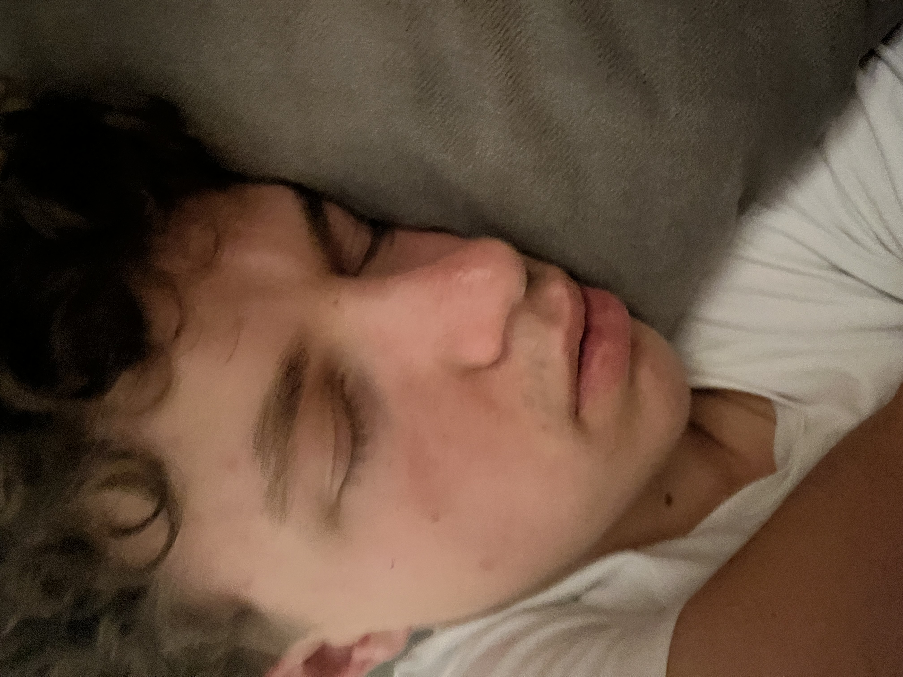

Au sein du BUT Réseaux & Télécommunications, Lucas possède un super-pouvoir unique : il est capable de transformer l'eau des fontaines de l'IUT en bière blonde d'un simple regard. Véritable icône des fins de semaine, Lucas ne conçoit pas un TP d'infra sans une canette fraîche dissimulée dans son sac à dos.
Mais son plus grand mystère reste sa fâcheuse tendance à réaliser des 67 de manière totalement aléatoire et régulière. Personne dans la promo ne sait exactement ce que signifie ce chiffre — s'agit-il de son nombre de pintes record, de son pourcentage de sang dans l'alcool, ou de son nombre d'absences injustifiées ? Le mystère reste entier au comptoir.
⚠️ Statut : Parfaitement immunisé contre la déshydratation.